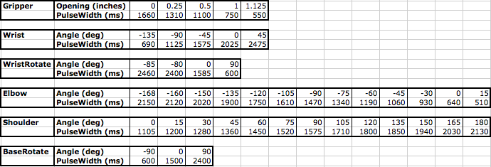
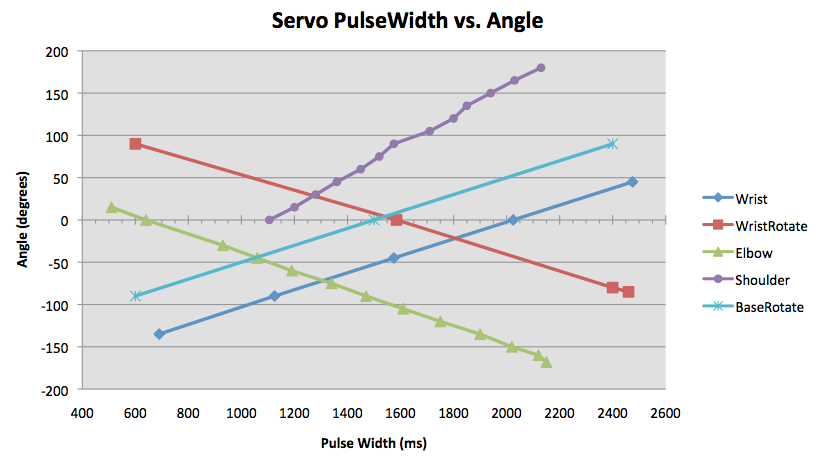

This approach is to model each joint with a linear equation:
Angle : joint angle, in degrees PulseWidth : servo pulse width, in milliseconds
web:Calibrating the Lynxmotion AL5D Robot Arm
web:INDUSTRIAL ROBOTS AND ROBOT SYSTEM SAFETY